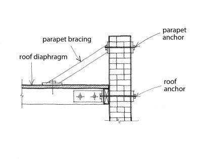
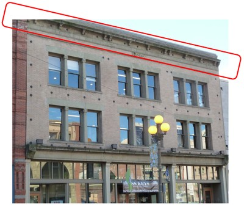

Roof-wall diaphragm connection present [RWCP]
There are connections between the roof diaphragm and the walls, capable of transferring in-plane forces from roof to wall and restraining outward displacements of walls.

Example of retrofit method to improve strength of wall-to-roof connections of a steel deck diaphragm to a concrete or masonry wall; note that N refers to New and E refers to existing components (FEMA 172, 1992)

Diagram showing a roof-wall connection for wood diaphragm and masonry wall, and parapet bracing.

Roof-wall diaphragm connection in a retrofitted building in Seattle, USA achieved through steel anchors (S. Brzev)

A typical wall anchor, consisting of a steel rod and an exterior steel plate exposed at the exterior; note that anchor plates are of different shapes and sizes (S. Brzev)